/// The Pageants of Santanalia ///
/// The Pageants of Santanalia ///
/// The Pageants of Santanalia ///
Beloved Santanalia !!
2008 /// Bloody Noes Santanalia Show, Meddlesome Manor
2009 /// 2nd Annual Santanalia Pageant, Boulder Coffee
2010 /// 3rd Annual Santanalia Pageant, MUCCC
2011 /// 4th Annual Santanalia Pageant, MUCCC & The Vault, Buffalo, NY
2013 /// Santanalia Sales Event, Krampus Trade Show, MUCCC
2015 /// Santanalia Revue, MetalSome Art, Hungerford Building
2016 /// 9th Annual Santanalia Pageant, Visual Studies Workshop
2017 /// Economicus & Lawyer (Yule & Thule) meet son Santa, Eastview Mall
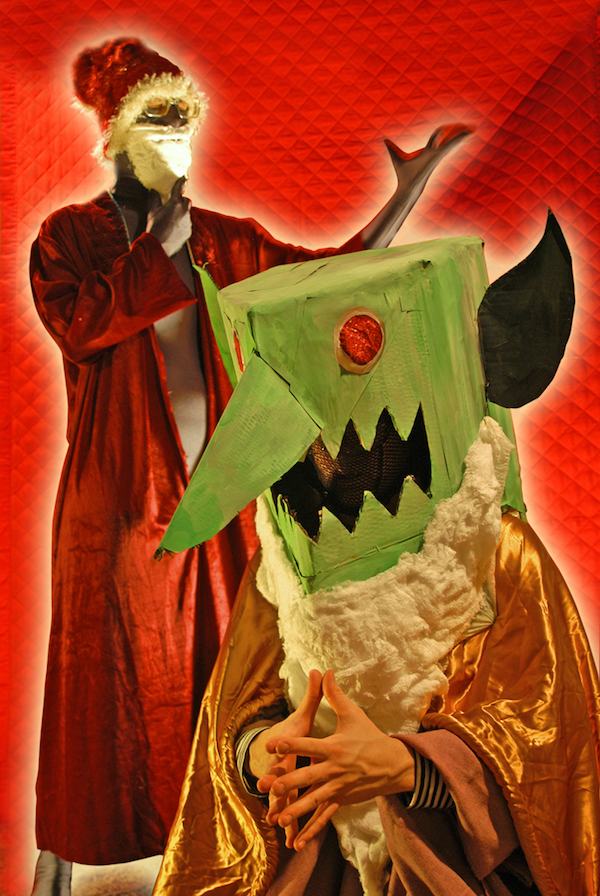
Please continue scrolling for memories and details of Santanalias of Yore ---
/// 2008 First Santanalia, Meddlesome Manor ///
Bloody Noes introduce the Santanalia concept at a basement show with a pantomime to prerecorded narrative voiced by Ed Downey
/// 2009 2nd Annual Santanalia Pageant, Boulder Coffee ///
The first iteration of the large cast Pageant, starring
Andrea Salzman + Lindsey Downey + Louis Herczeg + Mary Rose + Eric Frate + Ted Forsyth + Dan Lovett + Masumi + Ed Downey narrates (pictures follow)
| 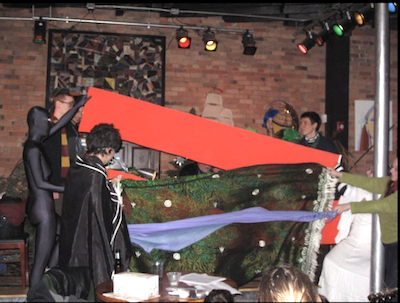 | Long, long ago in the sixth century / Thatʼs the 500ʼs, way way BCE /
There once was a magical land called Thule / With a yearly festival known as the Yule /
Thule was an island in Northern seas / Where flying cars flew by factories |
The Elves never lolligagged, nor did they shirk /
They were programmed to love to do all of that work /
They built up machines that could do anything / And brought many riches to Economicus their king | 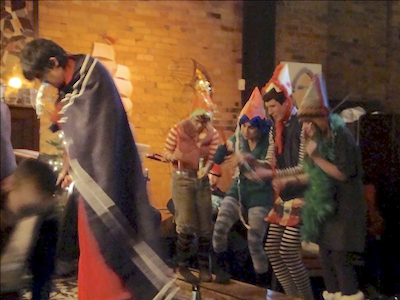 |
| 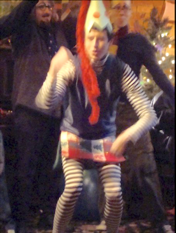 | They concocted a plan with ambitions imperial / To tinker with workersʼ genetic material / They decided to make all the workers much smaller / Which made them much lower than if they were taller / More industrious, more friendly, more obedient and faster / These new hominids would quite please their master /
And when weʼre finished, owners said to themselves / Weʼll have a new species! And weʼll call them “Elves.” |
On her head the hat sat. Then the spark did arrive / He looked in her eyes - the snowwoman was alive! /
He called her Icy, but her speech was all jivey / So we, like she, pronounce her name “Ivy”. / When she awoke, Peter mistletoed her / Which cast a spell over her with its odor | 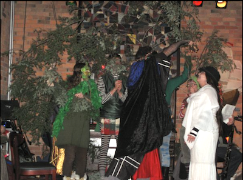 |
| 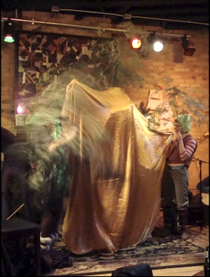 | She fell in love with him right then and right there / And he, with not even a moment to spare / Had the snowball wed them and carried her off / Into a marital pumpkin quite soft / And then with the mistletoe mentioned above / Peter and Ivy made sweet gnome-snowwoman love |
“Then let this be the season of cheer from now onward! / For freeing these elves, you shall be ever honored! / Weʼll deck the halls in the finest regalia! /
Weʼll name the season after you and call it, ʻSantanalia!ʼ” | 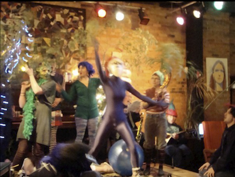 |
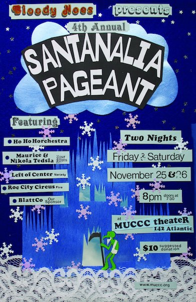
/// 2010 3rd Annual Santanalia Pageant, MUCCC ///
///
2011 4th Annual Santanalia Pageant, MUCCC & The Vault, Buffalo, NY ///
starring
Bobby Maville + Joel Dow + Jeffrey Askins + Masumi + Kameron Ackerman + Ted Forsyth + Beth Mickunas + Dawn Zuppelli + Sarah Coppola + Kate Stathis with narration by Ed Downey
Ho Ho Horchestra: Chris Reeg + Mike Rheinheimer + Mike Rae + Darren DeWispelaere
Ted as Pageant MC + opening acts including Dave Duncan's "Bowling with Ganesh"
| 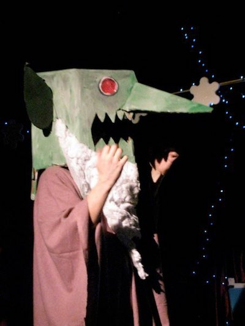 In a world of Gnomes, the fiercest competers / This child named Peter was competer-eater / The meanest! The nastiest! The darkest, most ominous / Krampus named him ::: Peter Economicus | 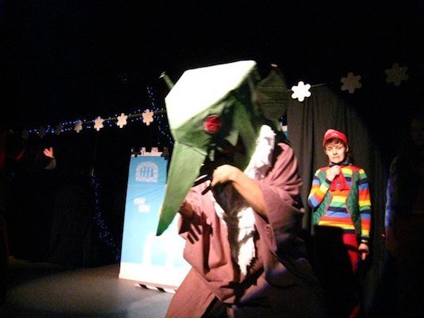 He now controlled Thule, and all factories / The wealth was all his to do with what he pleased /
He scared all the Elves, he whipped them and beat them / When he neednʼt have really done this, to defeat them |
| 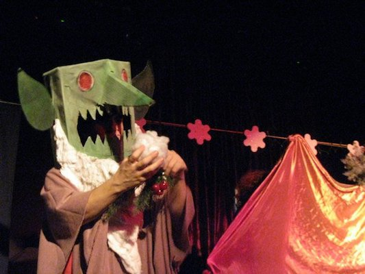 Ec consulted the ball. It brought bad news: / A new child was coming, an enfant terrible whose / Powers would take poor Black Peterʼs away! / Economicus rose from the globe, said, “I say!" | 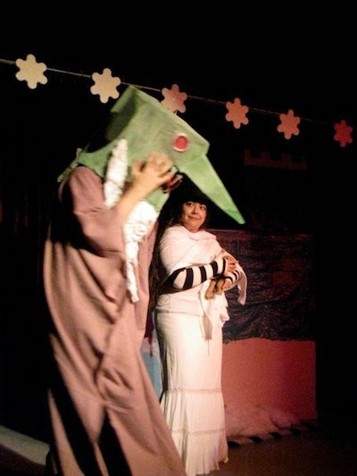 He ran to the pumpkin. Tore off the wreath / And he was shocked to see the scene beneath: / Ivy had already somehow given birth! / And the child was clearly no child of this earth |
| 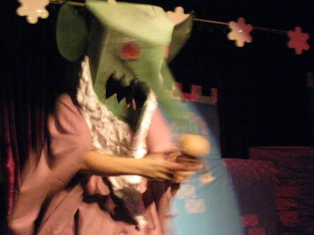 The baby it rattled in Peteʼs very grasp / Pete had to think now, and think very fast | 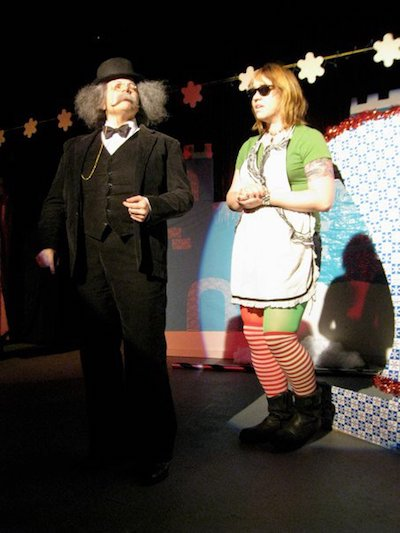 Burgermeister, the mayor of the elf village and Economicus' first child, with his mother, poor blind Sarah. |
| 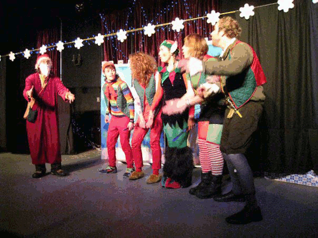 Santa now spoke to all of the elves / He told them, My people, now fight for yourselves! / Economicus owns everything in your homes / He rents it out to you to profit his gnomes / I know that you know this. So if you agree / Everyone together, please repeat after me: Ho! Ho! Ho! | 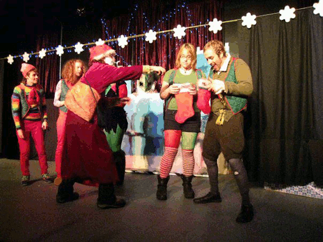 Then at midnight he did something quite shocking / He went down their chimneys, put coal in their stockings!! |
| 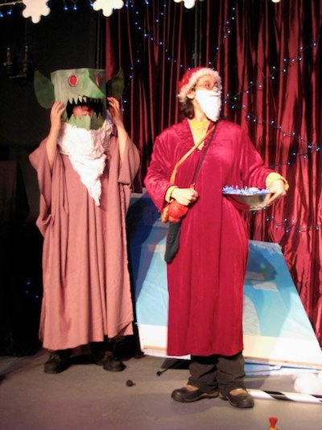 He said, “Now my elves! Just what are you doing? / What kind of trouble is this troublemaker brewing? / He continued, barely able to hold back his sobs / “My children, my children! Now donʼt you want jobs?" / “NO!” said the elves, and their cute elvish bellies / Did jingle and jangle like bowls filled with jelly | 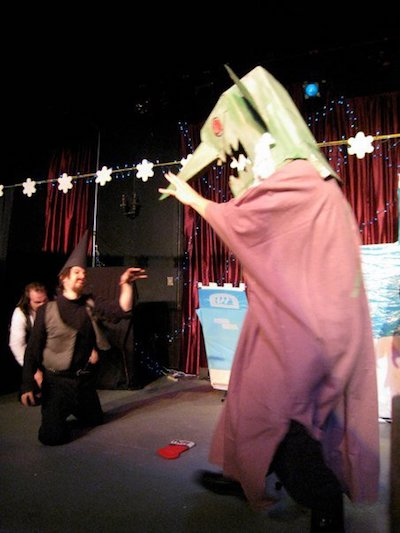
RELEASE THE NECRO-GNOMES!!! / Without the magic to keep them at bay / All of the gnomes now rose up from their graves |
| 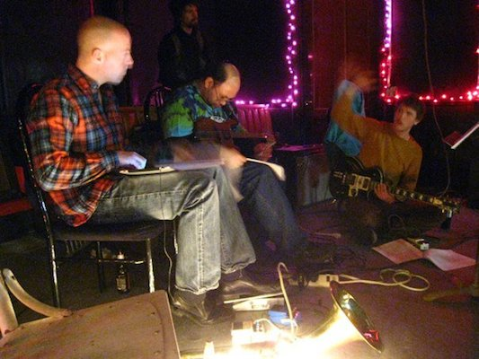 The Ho Ho Horchestra | 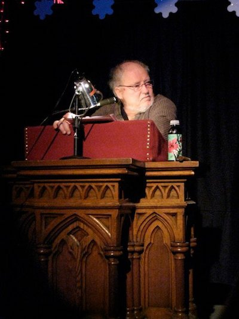 Our Narrator Edwap Downey |
/// 2013 Santanalia Sales Event, Krampus Trade Show, MUCCC ///
Trade show tabling event increasing Santanalia visibility featuring Ian's hard-hitting sales presentation
/// 2015 Santanalia, MetalSome Art, Hungerford Building ///
Smaller scale rolling pageant revue for holiday shopping event featuring musical guests Joel Dow and John Gallo
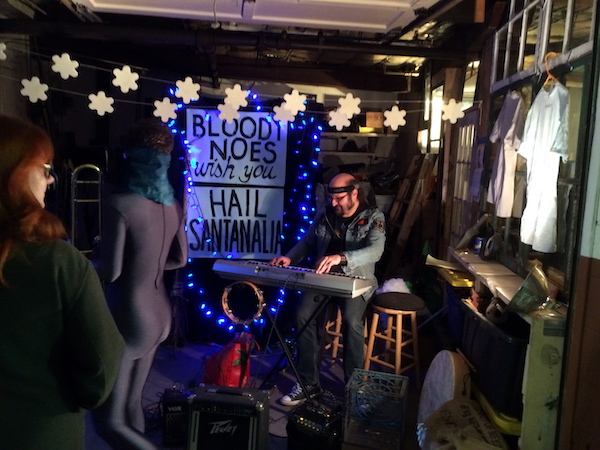
/// 2016 9th Annual Santanalia Pageant, Visual Studies Workshop ///
Back on the big stage with
Masumi + Jackie Das + Kristina Grabowski + Amber McAlister + Jenny Maire + Aydin Toure + Kameron Ackerman + Ray Mitrano + Travis Indovina + Ted as Coca Cola Santa with narration by elf Ron Bauerle and Ed Downey
Ho Ho Horchestra: Arden Zollweg + Phil Herford + R Scott Oliver /// Jeffrey Askins opening act
"Santanalia here we come / Right back where we started from"
Backstage photos by Kameron Ackerman:
| 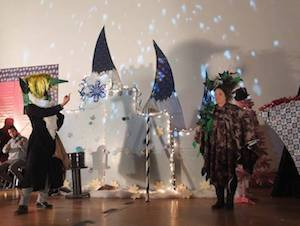 At Ec's ice castle | 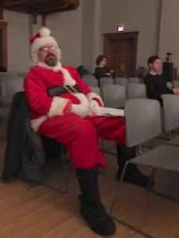 Coca Cola Santa | 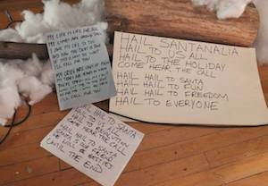 Santanalia carols |
| 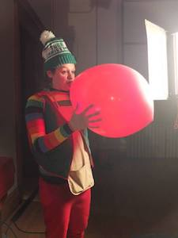 An Elf at work | 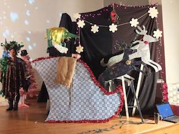 Economicus in sleigh | 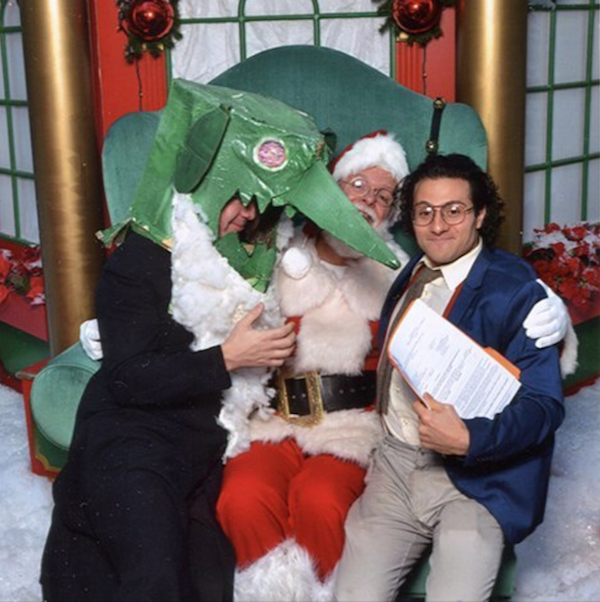 Yule Art |
| 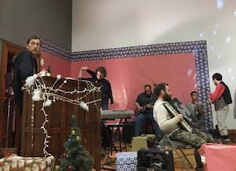 The Ho Ho Horchestra | 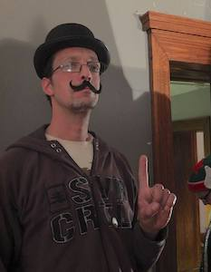 Our Burgermeister | 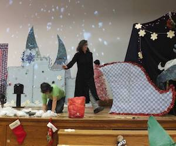 Directing is hard |
/// 2017 Economicus & Lawyer visit Santa, Black Friday Eastview Mall ///
In seeking reconciliation with his estranged son Santa Claus, Economicus and representing lawyer from Yule & Thule Law Associates
(Ray Mitrano) present Santa with a contract. Adorable.
Thanks & Credit
/// Thanks for all the costumes & the curtains Lindsey Downey /// and all hands who pitched in on sets and props esp. Lucas Jones & Jenny Mariano /// and Brian Blatt gave the company a nice ride to Buffalo in his bus /// and to Finkbeiner for the laptop /// Our sponsor BlattCo /// Santanalia poem & texts written by Ian Downey
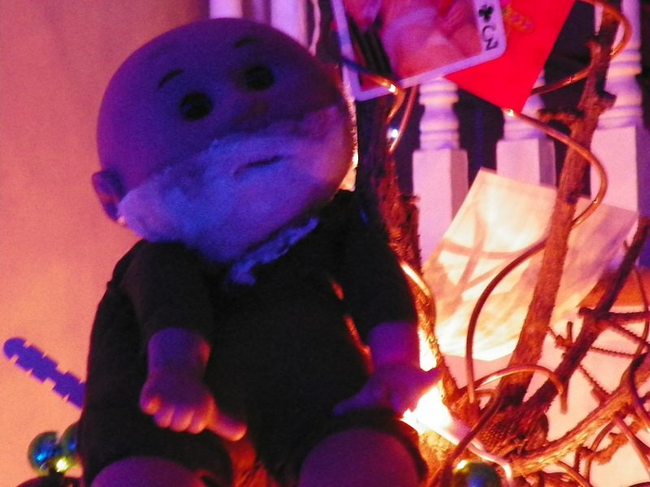